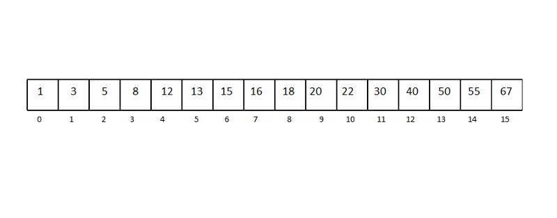
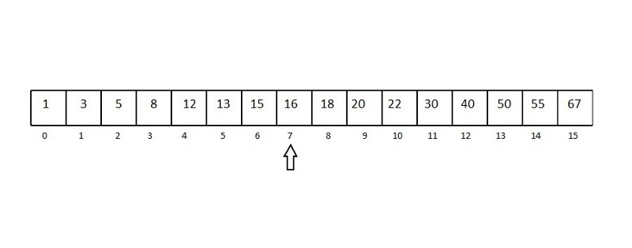
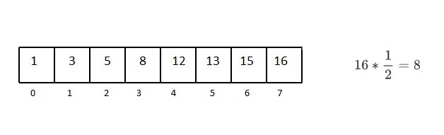
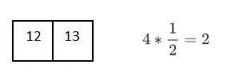
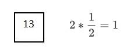
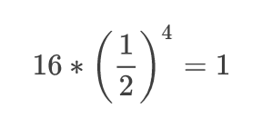
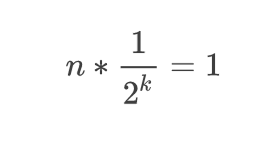
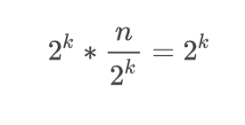

预先知道算法的复杂度是一回事，了解其后的原理是另一件事情。
不管你是计算机科班出身还是想有效解决最优化问题，如果想要用自己的知识解决实际问题，你都必须理解时间复杂度。
先从简单直观的 O(1) 和 O(n) 复杂度说起。O(1) 表示一次操作即可直接取得目标元素（比如字典或哈希表），O(n) 意味着先要检查 n 个元素来搜索目标，但是 O(log n) 是什么意思呢？
你第一次听说 O(log n) 时间复杂度可能是在学二分搜索算法的时候。二分搜索一定有某种行为使其时间复杂度为 log n。我们来看看是二分搜索是如何实现的。
因为在最好情况下二分搜索的时间复杂度是 O(1)，最坏情况（平均情况）下 O(log n)，我们直接来看最坏情况下的例子。已知有 16 个元素的有序数组。
举个最坏情况的例子，比如我们要找的是数字 13。

十六个元素的有序数组

选中间的元素作为中心点（长度的一半）

13 小于中心点，所以不用考虑数组的后一半

重复这个过程，每次都寻找子数组的中间元素


每次和中间元素比较都会使搜索范围减半。
所以为了从 16 个元素中找到目标元素，我们需要把数组平均分割 4 次，也就是说，

归纳一下

分子和分母代入指数

等式两边同时乘以 2^k
最终结果
现在来看看「对数」的定义：
为使某数（底数）等于一给定数而必须取的乘幂的幂指数。
也就是说可以写成这种形式
对数形式
所以 log n 的确是有意义的，不是吗？没有其他什么可以表示这种行为。
就这样吧，我希望我讲得这些你都搞懂了。在从事计算机科学相关的工作时，了解这类知识总是有用的（而且很有趣）。说不定就因为你知道算法的原理，你成了小组里能找出问题的最优解的人呢，谁知道呢。祝好运！